สวัสดีครับ ผม สหรัฐ เวียงแก้ว
นักศึกษาชั้นปีที่ 4 สาขาวิทยาการข้อมูลและนวัตกรรมซอฟต์แวร์ มหาวิทยาลัยอุบลราชธานี มีพื้นฐานที่แข็งแกร่งด้านการพัฒนาซอฟต์แวร์ Full-Stack Web Application และการเชื่อมต่อระบบ AI & External APIs เรียนรู้สิ่งใหม่ได้รวดเร็ว พร้อมร่วมงานและสร้างผลลัพธ์ที่มีคุณค่าให้กับทีมเทคโนโลยี
เกี่ยวกับตัวผม
ความมุ่งมั่น แรงบันดาลใจ และเป้าหมายในสายงานพัฒนาซอฟต์แวร์
สรุปประวัติส่วนตัว (Professional Summary)
"I am a fourth-year Data Science and Software Innovation student at Ubon Ratchathani University. With a solid foundation in software development and programming, I am a fast learner who possesses strong communication and teamwork skills. I am dedicated to building positive working relationships and contributing effectively to a tech-driven environment."
มีความชื่นชอบและมุ่งมั่นในการเขียนโค้ดเพื่อแก้ปัญหาจริง ผ่านการลงมือพัฒนาทั้งโปรเจกต์ระดับ Full-Stack Application, ระบบ Backend API ที่ปลอดภัย มีระเบียบ ตลอดจนการบูรณาการเทคโนโลยี Generative AI (Google Gemini API) เข้ามาเสริมศักยภาพของเว็บแอปพลิเคชัน
จุดเด่นและเป้าหมายการทำงาน
นอกจากทักษะด้าน Software Development แล้ว ยังมีประสบการณ์จริงจากการทำงานด้าน IT Support และ Computer Technician ทำให้มีความเข้าใจโครงสร้างพื้นฐานระบบ Network, Hardware, OS Deployment และ Active Directory เป็นอย่างดี
ทักษะและความสามารถ
เทคโนโลยี ภาษา เครื่องมือ และทักษะที่นำมาประยุกต์ใช้ในการพัฒนาโปรเจกต์
Languages (ภาษาเขียนโค้ด)
Frameworks & Libraries
Databases (ฐานข้อมูล)
Tools & Platforms
Soft Skills (ทักษะส่วนบุคคล)
Infrastructure & Systems
ผลงานโปรเจกต์
ผลงานการพัฒนา Full-Stack และเว็บแอปพลิเคชันที่สร้างขึ้น
ระบบจัดตารางอ่านหนังสืออัตโนมัติ (Smart Study Planner)
Smart Study Planner เป็นระบบเว็บแอปพลิเคชันที่พัฒนาขึ้นเพื่อแก้ปัญหาการบริหารเวลาของนักเรียนและนักศึกษาในการเตรียมตัวสอบ โดยระบบสามารถวิเคราะห์ข้อมูลรายวิชา ระดับความยากง่าย วันเวลาสอบจริง และช่วงเวลาว่างในแต่ละสัปดาห์ของผู้เรียน เพื่อคำนวณและสร้างตารางอ่านหนังสือแบบปรับแต่งเฉพาะบุคคล (Personalized Study Schedule) ได้อย่างสมดุล ไม่โหลดเกินไป และครอบคลุมเนื้อหาก่อนสอบ
นอกจากระบบการคำนวณตารางแล้ว ยังผสานพลังของ Google Gemini AI (LLM) เพื่อช่วยสรุปประเด็นสำคัญ (Key Takeaways) ทันทีหลังอ่านจบ และสร้างแบบทดสอบประเมินตนเอง (Interactive Quizzes) พร้อมเฉลยละเอียดแบบอัตโนมัติ และเชื่อมต่อ Google Calendar API ให้แจ้งเตือนบนสมาร์ตโฟนได้แบบ Real-time
สถาปัตยกรรมและฟังก์ชันสำคัญของระบบ (System Core Modules)
1. Auto-Scheduling Algorithm
อัลกอริทึมจัดตารางอัจฉริยะ นำข้อมูลเวลาว่าง (เช้า/บ่าย/เย็น/ดึก หรือรายชั่วโมง), ระดับความยากง่ายของวิชา และวันสอบ มาประมวลผลผ่าน AI Prompt Constraint Scheduling จัดสรร Session การอ่านและช่วงเวลาพักผ่อนได้อย่างพอดี
2. AI Content Summarization
เชื่อมต่อ Google Gemini API ให้ทำหน้าที่เป็นติวเตอร์ส่วนตัว สรุปสาระสำคัญหลังอ่านจบแบบหัวข้อย่อย (Key Takeaways) เป็นภาษาไทยที่กระชับ เข้าใจง่าย และบันทึกเข้า "สมุดบันทึกสรุป" เพื่อเปิดทบทวนภายหลังได้
3. Dynamic AI Quiz Generator
สร้างข้อสอบปรนัย (Multiple Choice) 5 ข้อแบบไดนามิกตามบทเรียนที่เพิ่งอ่าน ตรวจคำตอบแบบ Interactive พร้อมคำนวณคะแนนและแสดงหน้าเฉลยคำตอบพร้อมคำอธิบายเพื่อวัดระดับความเข้าใจจริง
4. Google Calendar Sync & OAuth 2.0
เชื่อมต่อ Google Calendar API ผ่าน OAuth 2.0 ซิงค์กิจกรรมและช่วงเวลาอ่านหนังสือขึ้นบน Google Calendar ของผู้ใช้โดยอัตโนมัติ พร้อมรองรับการอัปเดตและลบอีเวนต์เมื่อมีการคำนวณตารางใหม่
5. Study Session Timer & Focus Mode
ระบบจับเวลาขณะอ่านหนังสือตามเวลาที่กำหนด (เช่น 45/60 นาที) มีโหมดพักเบรก และระบบบันทึกความคืบหน้า (Checkbox & Progress Bar) เพื่อติดตามเปอร์เซ็นต์ความสำเร็จของแต่ละวิชา
6. Subject & Lecture File Management
ระบบจัดการรายวิชา เพิ่ม/ลบวิชา กำหนดความยากง่าย วันเวลาสอบ และอัปโหลดไฟล์เอกสารประกอบการเรียนการสอน (รองรับ .pdf, .txt สูงสุด 5 ไฟล์/วิชา) เพื่อนำไปใช้อ้างอิงการสรุปเนื้อหา

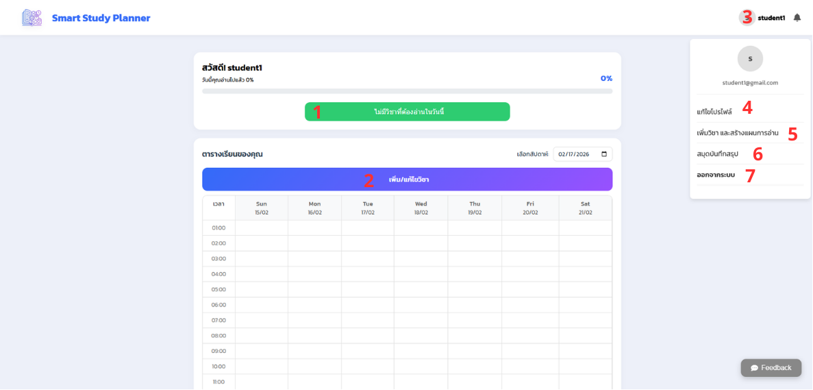
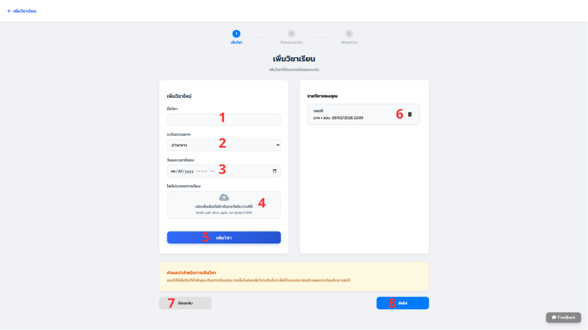
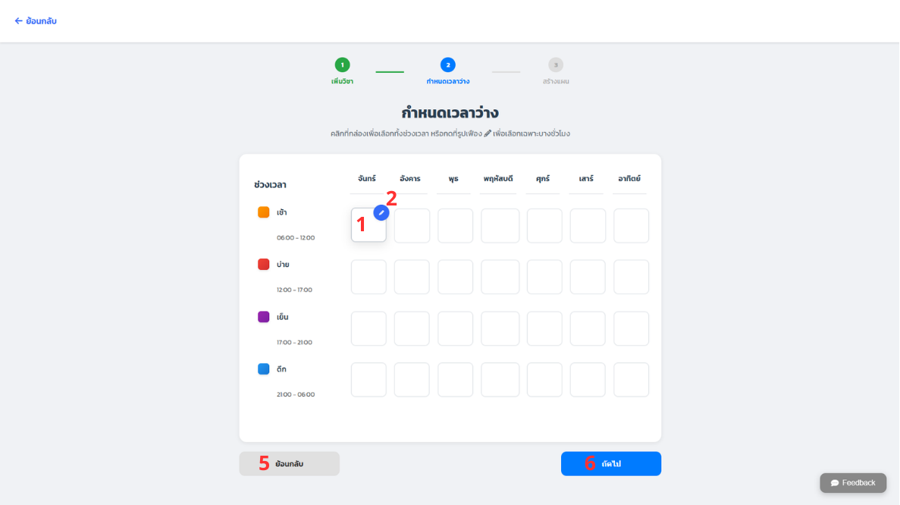
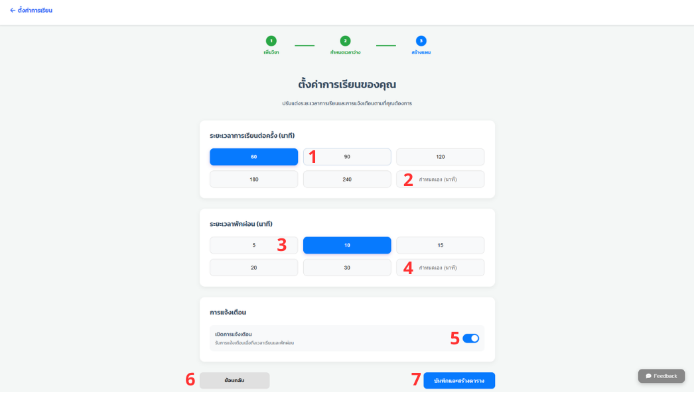
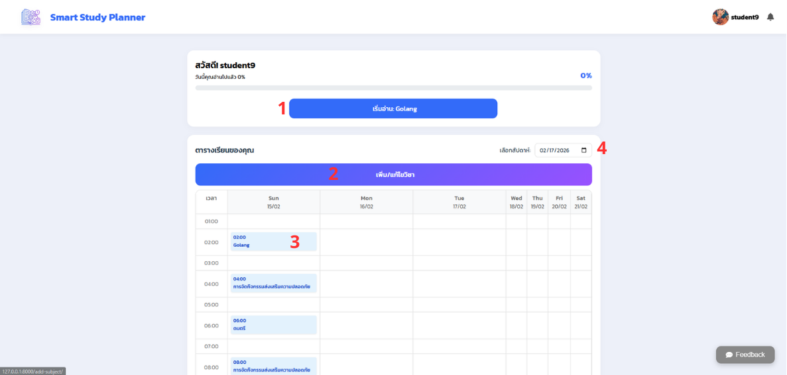
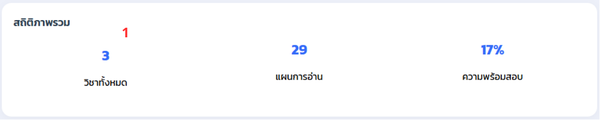
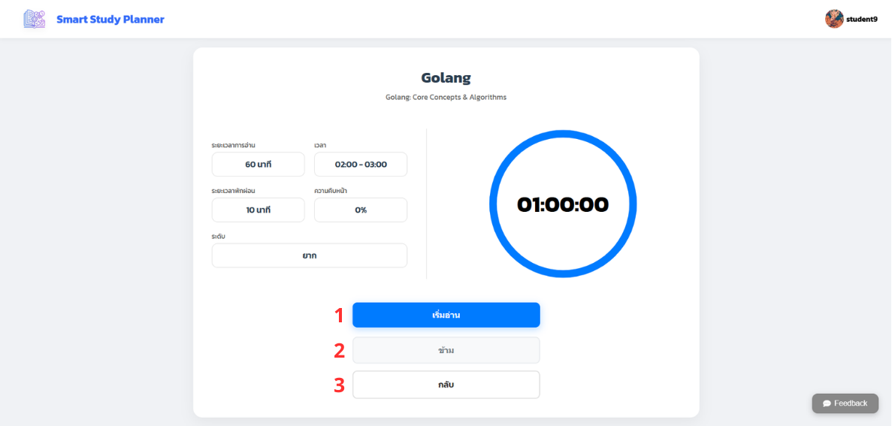
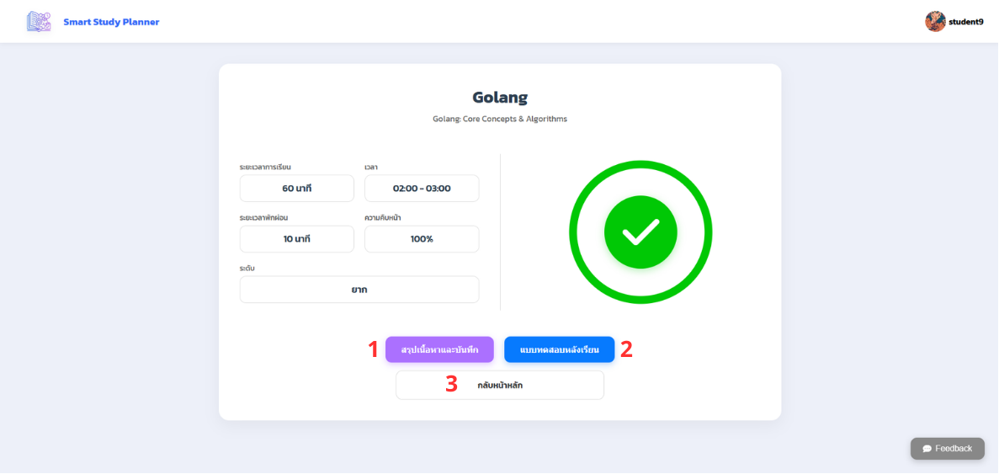
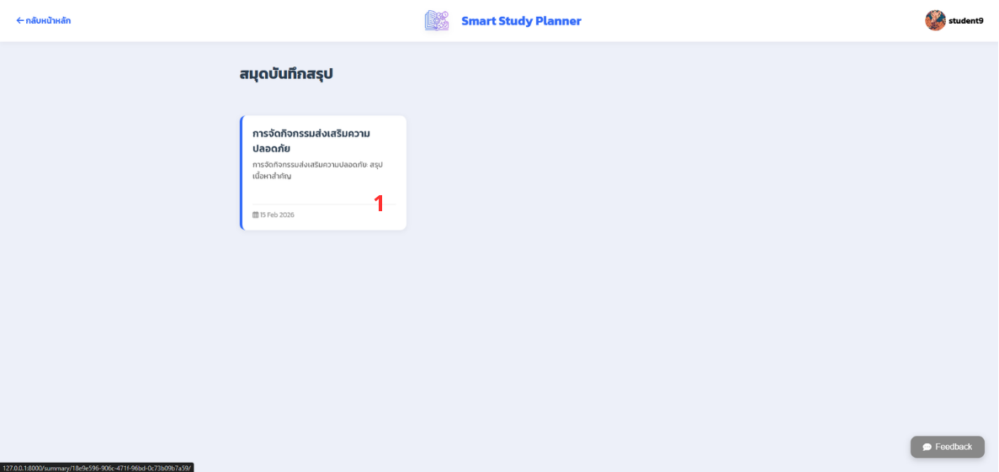
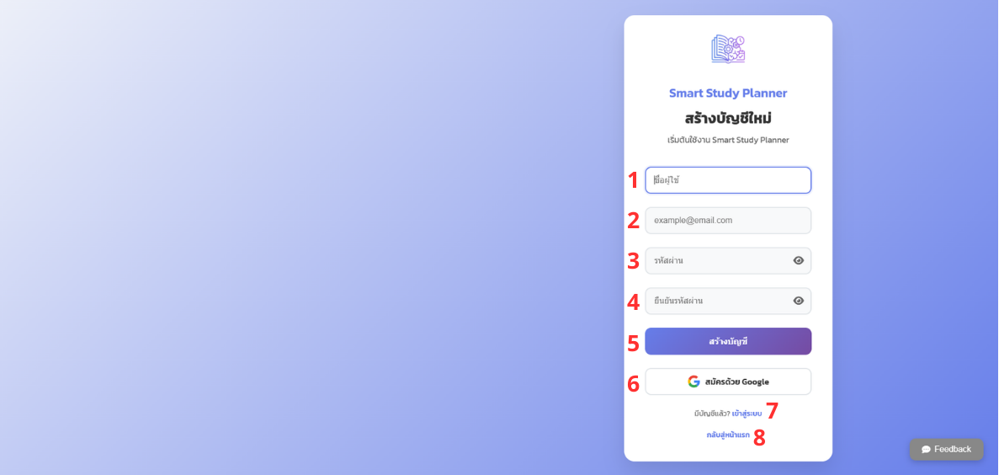
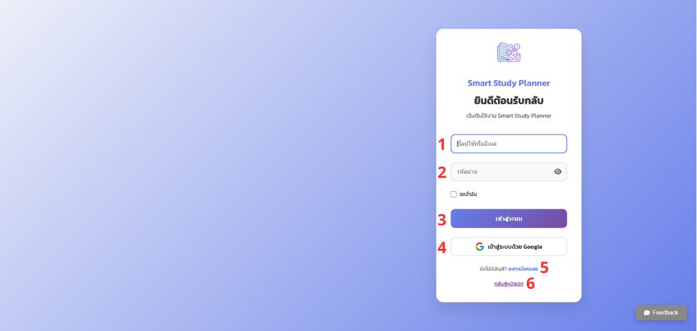
Local Hybrid & Graph RAG Assistant
Local Hybrid & Graph RAG Assistant พัฒนาขึ้นเพื่อแก้ปัญหาด้านความปลอดภัยและความแม่นยำในการสืบค้นเอกสารทางเทคนิค โดยทำงานแบบ Offline 100% ปราศจากค่าใช้จ่าย API และป้องกันความเสี่ยงข้อมูลรั่วไหลจากการส่งซอร์สโค้ดไปยัง Cloud LLM
ก้าวข้ามข้อจำกัดของ Pure Vector Search ที่มักพลาดคีย์เวิร์ดเฉพาะทาง (เช่น ชื่อ Class, Function, Error Code) และไม่เข้าใจความสัมพันธ์เชิงโครงสร้างของระบบ ด้วยการผสานการค้นหา 3 ระนาบ: FAISS (Dense Vector) สำหรับความหมายเชิงบริบท, BM25 (Sparse Lexical) สำหรับดึงคำเฉพาะทางอย่างแม่นยำ และ Kùzu DB (Embedded Property Graph) สำหรับค้นหาความสัมพันธ์เชิงโครงสร้างผ่านภาษา Cypher
สถาปัตยกรรมระบบ Tri-Modal Hybrid Retrieval Architecture
[User Query]
│
├──▶ 1. FAISS (Vector Search) ──▶ ค้นหาความหมายเชิงบริบท (Semantic Similarity)
├──▶ 2. BM25 (Keyword Search) ──▶ ดึงคำเฉพาะทาง/ชื่อฟังก์ชัน (Lexical Precision)
└──▶ 3. Kùzu DB (Graph Search) ──▶ ค้นหาความสัมพันธ์ของ Entity ด้วย Cypher Query
│
▼
[Reciprocal Rank Fusion (RRF)] ──▶ จัดอันดับใหม่โดยไม่ต้องทำ Score Normalization
│
▼
[Prompt Augmentation + Sources] ──▶ ส่ง Context พร้อมแหล่งอ้างอิงให้ LLM (Qwen-2.5)
│
▼
[Streamlit UI] ──▶ แสดงคำตอบแบบ Streaming พร้อมเวลา Latency
ไฮไลต์ฟีเจอร์เด่นและวิศวกรรมระบบ (Engineering Highlights)
1. Graph RAG (Embedded Kùzu DB)
สกัด Entity อัตโนมัติ (CamelCase, PascalCase, snake_case) จากโค้ดและสร้างความสัมพันธ์ (Concept)-[:RELATES_TO]->(Concept) ลงบน In-Process Graph Database โดยตรง Query รวดเร็วผ่าน Cypher โดยไม่ต้องรัน Graph Server แยก
2. Reciprocal Rank Fusion (RRF)
รวมผลลัพธ์จาก Vector, BM25 และ Graph Search เข้าด้วยกันอย่างมีเสถียรภาพ ขจัดปัญหาความไม่สอดคล้องของ Scale คะแนน (L2 Distance vs BM25 Score) จัดอันดับ Chunk ที่ตรงประเด็นที่สุดขึ้นมาเป็นอันดับแรก
3. Quantitative Evaluation Pipeline
พัฒนาสคริปต์ Benchmark (evaluate.py) เทียบกับชุดข้อมูล Ground Truth วัดผลครอบคลุมทั้ง Recall@K, Precision@K และ Mean Reciprocal Rank (MRR) เพื่อพิสูจน์คุณภาพของระบบสืบค้น
4. Performance & Reliability Engineering
Batch Processing (32 Chunks) พร้อม Rate Throttling ป้องกันปัญหา Local LLM OOM และ Socket Exhaustion บน Windows รวมทั้งใช้ @st.cache_resource ใน Streamlit จัดการ Heavy Objects ไม่ให้ Reload ซ้ำซ้อน
CafePOS – Smart Cafe Point of Sale & Kitchen Management System
CafePOS เป็นระบบบริหารจัดการจุดขาย (POS) และหน้าจอจัดคิวบาริสต้า (Kitchen Display System - KDS) อัจฉริยะ ออกแบบและพัฒนาเพื่อรองรับกระบวนการสั่งซื้อ, การจัดคิวบาริสต้าแบบเรียลไทม์, การตัดสต็อกวัตถุดิบอัตโนมัติตามสูตร และการออกรายงานยอดขายเชิงวิเคราะห์
จุดเด่นด้านสถาปัตยกรรมซอฟต์แวร์ (Key Engineering Focus): โปรเจกต์นี้ไม่ใช่แค่ Web CRUD ทั่วไป แต่เน้นการออกแบบสถาปัตยกรรมซอฟต์แวร์ (Software Architecture) และ Clean Code อย่างเข้มข้น โดยนำ Gang of Four (GoF) Design Patterns ถึง 8 รูปแบบ มาแก้ปัญหา Business Logic ที่ซับซ้อน เช่น การปรับแต่งเครื่องดื่ม, ลำดับการคำนวณราคา/โปรโมชัน, วงจรสถานะออเดอร์ และการตัดสต็อกวัตถุดิบตามสูตรจริง รองรับการขยายระบบ (Extensibility) และการบำรุงรักษาง่าย (Maintainability)
การประยุกต์ใช้ Software Design Patterns (8 GoF Patterns)
โครงสร้างสถาปัตยกรรมที่นำแบบแผนการออกแบบมาตรฐานระดับโลกมาแก้ปัญหา Business Logic ทางธุรกิจจริง:
Decorator Pattern
Menu Customization: ห่อหุ้มออบเจกต์เครื่องดื่มเพื่อปรับอุณหภูมิ, ความหวาน และเพิ่มท็อปปิ้ง (+นม, +ไซรัป) พร้อมคำนวณราคาและวัตถุดิบเพิ่มโดยไม่ต้องแก้คลาสหลัก
Composite Pattern
Cart & Items Hierarchy: ปฏิบัติต่อสินค้าเดี่ยวและตะกร้าสินค้าผ่าน Interface เดียวกัน ทำให้คำนวณราคารวมและวัตถุดิบทั้งหมดได้แบบ Recursive
Chain of Responsibility
Pricing & Discounts: โซ่คำนวณราคาแยกชั้นอย่างเป็นระบบ: ราคาตั้งต้น ➔ หักคูปองส่วนลด ➔ หักโปรโมชัน ➔ คำนวณภาษีมูลค่าเพิ่ม (VAT) เป็นขั้นตอน
Strategy Pattern
Payment Processing: แยกอัลกอริทึมการชำระเงิน (Cash คำนวณเงินทอน / PromptPay จำลองรหัสอ้างอิง) ให้สามารถสลับหรือเพิ่มช่องทางจ่ายเงินใหม่ได้อิสระ
State Pattern
Order Lifecycle: จัดการสถานะออเดอร์ (Pending ➔ Brewing ➔ Completed / Canceled) พร้อมบังคับใช้ Business Rule เช่น ห้ามยกเลิกเมื่อเครื่องดื่มเริ่มชงแล้ว
Facade Pattern
Checkout Flow: รวมขั้นตอน Checkout ที่ซับซ้อน (Cart + Price Chain + Inventory + Payment) ให้อยู่ภายใต้จุดเรียกใช้งานจุดเดียว place_order()
Singleton Pattern
Inventory Control: ควบคุมให้มีเพียง Instance เดียวในการจัดการคลังวัตถุดิบ เพื่อรักษาความถูกต้องของข้อมูลและป้องกันความขัดแย้งของสต็อก (Stock Concurrency)
Template Method
Sales Export: กำหนดโครงสร้างการสร้างรายงานยอดขาย (Header ➔ Body ➔ Summary) และเปิดให้คลาสลูกจัดรูปแบบเป็นไฟล์ .csv หรือ .txt ได้ยืดหยุ่น
ฟีเจอร์หลักในระบบ (Core Features)
1. POS & Customization
หน้าจอแคชเชียร์รับออเดอร์ สั่งเครื่องดื่ม ปรับระดับความหวาน ร้อน/เย็น/ปั่น เพิ่มท็อปปิ้ง และใส่โค้ดส่วนลด พร้อมคำนวณราคาสุทธิแบบอัตโนมัติ
2. Multi-Payment Gateway
รองรับการชำระเงินหลายรูปแบบ ทั้งเงินสดพร้อมคำนวณเงินทอนอัตโนมัติ และระบบสแกน PromptPay QR Code พร้อมสร้างรหัสอ้างอิงธุรกรรม
3. Barista KDS (Kanban Board)
หน้าจอสั่งงานในครัวสำหรับบาริสต้า แสดงรายการออเดอร์แบบ Real-time แจ้งเวลารอคิว และกดอัปเดตสถานะการชง (Pending ➔ Brewing ➔ Ready)
4. Customer Live Queue Monitor
บอร์ดแสดงคิวหน้าร้านสำหรับลูกค้า อัปเดตสถานะคิวแบบเรียลไทม์ผ่าน REST API Polling ทุก 3 วินาที เพื่อให้ลูกค้าทราบสถานะออเดอร์ทันทีเมื่อพร้อมเสิร์ฟ
5. Recipe Builder & Auto Inventory
ระบบผูกสูตรเครื่องดื่มเข้ากับคลังวัตถุดิบ ตัดสต็อกอัตโนมัติแบบเรียลไทม์ตามขนาดแก้วและส่วนผสมเสริมที่ลูกค้าเลือก ป้องกันปัญหาสต็อกไม่ตรง
6. Manager Suite & Reports
แดชบอร์ดบริหารสำหรับผู้จัดการร้าน จัดการเมนู สูตร และสต็อก พร้อมระบบ Export รายงานยอดขายออกมาเป็นไฟล์ .csv หรือ .txt ผ่าน Template Method
CoinTree — Gamified Personal Finance & Habit Tracker
CoinTree คือแอปพลิเคชันบันทึกรายรับ-รายจ่ายที่ผสานแนวคิด Gamification เพื่อเปลี่ยนการทำบัญชีที่น่าเบื่อให้กลายเป็นการสร้างวินัยทางการเงินอย่างยั่งยืน โดยเชื่อมโยงพฤติกรรมการบันทึกบัญชีและการออมเงินเข้ากับการเติบโตของ "ต้นไม้เสมือนจริง (Pet/Tree Evolution)" ยิ่งบันทึกต่อเนื่อง (Streak Days) ต้นไม้จะยิ่งเติบโต พร้อมรับเหรียญ (Coins) และ XP ไปสุ่มกาชาของตกแต่ง (Cosmetics)
ระบบถูกออกแบบด้วยสถาปัตยกรรม Full-Stack Application ที่เน้นความปลอดภัยระดับมาตรฐานอุตสาหกรรมด้วย OAuth 2.0 / OpenID Connect (OIDC) พร้อม PKCE จัดการ State ภายในแอปพลิเคชันด้วย Riverpod และพัฒนา RESTful APIs ผ่าน Django REST Framework
จุดเด่นด้านเทคนิคและวิศวกรรมระบบ (Technical Highlights)
1. Security First (OIDC + PKCE)
แทนที่จะใช้ Basic JWT ทั่วไป ระบบเลือก Implement OpenID Connect Authorization Code Flow with PKCE (S256) ซึ่งเป็นมาตรฐานความปลอดภัยสูงสุดสำหรับ Mobile/SPA Client ป้องกันการดักจับ Authorization Code
2. Reactive UI & Clean Architecture
แยกเลเยอร์ชัดเจน (Models, Services, Providers, Screens) และใช้ Riverpod ในการดึงและกระจายข้อมูล รองรับ Dependency Injection และ Caching ทำให้โค้ด Reusable และ Test ได้ง่าย
3. Server-Side Gamification Engine
คำนวณ Level, XP, Streak Days และ Gacha Probabilities ในระดับ Backend Model และ DRF Serializers เพื่อป้องกันการโกงคะแนนและไอเทมจากฝั่ง Client
4. Tree Evolution & Gacha Inventory
ระบบต้นไม้เติบโต 4 ระดับ (Seed ➔ Plant ➔ Tree ➔ Golden Tree) ตามจำนวนวัน Streak พร้อมระบบสุ่มกาชาไอเทมตกแต่ง (หมวก, กระถาง, พื้นหลัง) แบ่งตาม Rarity (Common, Rare, Epic, Legendary)
5. Financial Analytics & fl_chart
แสดงภาพรวมยอดคงเหลือ รายรับ-รายจ่ายแบบ Real-time พร้อมแผนภูมิวงกลม (Pie Chart) จำแนกสัดส่วนค่าใช้จ่ายตามหมวดหมู่ และฟิลเตอร์ค้นหาประวัติตามเดือน
6. Multi-Wallet & UX Resilience
จัดการกระเป๋าเงินได้หลายใบพร้อมสัตว์เลี้ยงประจำกระเป๋า รองรับ Light/Dark Mode และมีระบบตรวจจับ Network Disconnect พร้อมปุ่ม Retry เพื่อประสบการณ์ใช้งานที่ต่อเนื่อง
Service Booking
ระบบบริหารจัดการและสำรองโต๊ะสำหรับร้านอาหาร เพื่ออำนวยความสะดวกให้ลูกค้าสามารถเลือกจองโต๊ะและเวลาที่ต้องการล่วงหน้า พร้อมระบบจัดการหลังบ้านสำหรับพนักงานและผู้ดูแลระบบ
- ระบบ Role-Based Access Control (RBAC) แยกสิทธิ์การใช้งานชัดเจนระหว่าง Admin และ Customer
- ระบบจัดการโต๊ะอาหาร (Table Management) ตรวจสอบสถานะว่าง/ไม่ว่างของแต่ละโต๊ะแบบ Real-time
- ระบบตรวจสอบเงื่อนไขเวลาจอง พร้อมระบบควบคุมการแก้ไข/ยกเลิกการจองตามเงื่อนไขเวลาที่กำหนด (Time-restricted modifications)
- Dashboard สรุปรายการจองประจำวันสำหรับผู้จัดการร้าน
ประสบการณ์และการศึกษา
เส้นทางการเรียนรู้และประสบการณ์การทำงานที่ผ่านมา
ประสบการณ์การทำงาน (Work Experience)
- ประกอบเครื่องคอมพิวเตอร์ตามความต้องการของลูกค้า (Custom PC Builds) พร้อมตรวจสอบและแก้ปัญหาฮาร์ดแวร์ในระดับชิ้นส่วน (Component-level Troubleshooting)
- ดำเนินการติดตั้งและกำหนดค่าระบบปฏิบัติการ (OS Deployments) และ Driver ต่างๆ ให้ทำงานได้เต็มประสิทธิภาพ
- ให้คำแนะนำเชิงเทคนิคแก่ลูกค้าในการเลือกใช้อุปกรณ์คอมพิวเตอร์ที่เหมาะสมกับงบประมาณและการใช้งาน มุ่งเน้นการแก้ปัญหาและความพึงพอใจสูงสุดของลูกค้า
- ให้บริการช่วยเหลือและแก้ไขปัญหาด้าน Hardware, Software และ Network แก่ผู้ใช้งานในองค์กรอย่างรวดเร็ว (Prompt Troubleshooting)
- ดูแลบำรุงรักษาเครื่องคอมพิวเตอร์และอุปกรณ์สำนักงาน พร้อมดำเนินการติดตั้งและปรับใช้ Windows OS ให้พร้อมใช้งาน
- บริหารจัดการบัญชีผู้ใช้งาน สิทธิ์การเข้าถึง และระบบอีเมลองค์กร โดยใช้ Active Directory, Microsoft 365 และ Google Workspace
ประวัติการศึกษา (Education)
ระดับการศึกษา: นักศึกษาชั้นปีที่ 4 (Fourth-Year Student)
- สาขาวิชา: Data Science and Software Innovation
- วิชาหลัก: Data Structures & Algorithms, Object-Oriented Programming, Web Application Development, Database Systems, Machine Learning & Data Science Basics
- โครงงานสำคัญ: พัฒนาโปรเจกต์ Smart Study Planner นำเสนอโซลูชันด้านการศึกษาด้วย Django และ Google Gemini AI
ติดต่อผม
ยินดีพูดคุยแลกเปลี่ยนเรื่องโอกาสในการทำงาน สหกิจศึกษา หรือโปรเจกต์พัฒนาซอฟต์แวร์